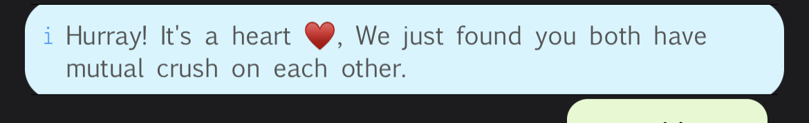

When you mark a user as your heart? We sent a anonymous notification to the user saying, "Someone has
marked you as their crush on While."
If the user makes a correct guess, then it's a mutual crush and we let you both know.

It sends the user a anonymous notification which says, "Someone has secret crush on you."
If user marks you back as their crush then we let's you both know.
Yes, Invites are sent anonymously.
Marking a friends sends a message and notification to the user that you have marked them as your friend.